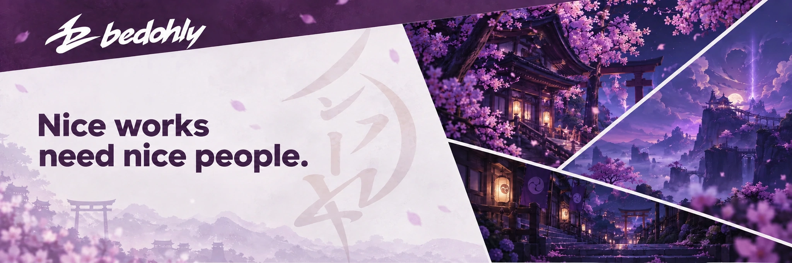

Hey, I'm Bedo, a Full-Stack Web Developer. I build web applications end to end — the data model, the API and the interface — and I care how the result feels.
▸ Whole stack, one brain — data models, APIs and interfaces designed in one pass
▸ Performance first — clean architecture, tight queries, no dead weight shipped
▸ Pixel-tight UI — interfaces that stay out of the way and survive real users
▸ Idea to product — messy briefs turned into something people can actually use
▸ Automation — if I have to do a thing twice, the second time is a script
▸ Night shift — most of this gets built long after everyone else logged off
▸ Performance first — clean architecture, tight queries, no dead weight shipped
▸ Pixel-tight UI — interfaces that stay out of the way and survive real users
▸ Idea to product — messy briefs turned into something people can actually use
▸ Automation — if I have to do a thing twice, the second time is a script
▸ Night shift — most of this gets built long after everyone else logged off
📫 Drop me a line